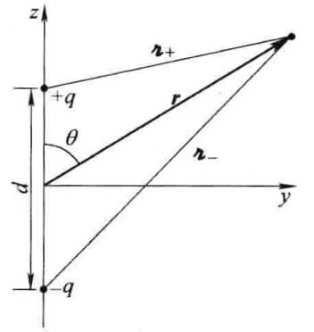
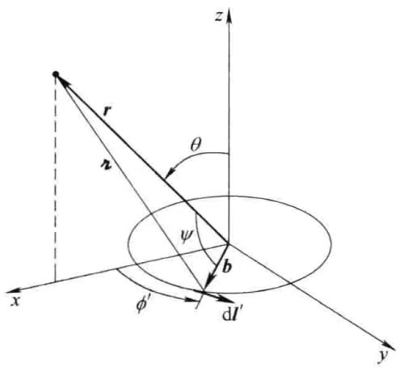

[设]源局域在原点附近.
[注]对于非局域源，如无穷大平面、线或螺线管，辐射的整个概念需重新定义.
想象一个半径为\(r\)的巨大球壳，通过这个面的总功率为Poynting矢量的积分：
$$P(r) = \oint\boldsymbol{S}\cdot\mathrm{d}\boldsymbol{a} = \frac{1}{\mu_0}\oint(\boldsymbol{E}\times\boldsymbol{B})\cdot\mathrm{d}\boldsymbol{a}$$辐射的功率由\(r\)趋于无限大时的极限得到：
$$P_{radiation} = \lim\limits_{r\rightarrow\infty}P(r)$$功率：单位时间内传递的能量.
辐射实际上并不要求传递到无限远，但是在理想的无限自由空间模型中，辐射一定是需要能够传递到无限远.
这个能量（单位时间内的）传播至无限远，且不再返回.
现在，球壳的面积为\(4\pi r^2\)，故由辐射发生时，Poynting矢量的减小（在\(r\)较大时）不能快于\(1/r^2\).
\(n=2\)时，典型辐射
\(n\lt 2\)时，不符合能量守恒
\(n\gt 2\)时，\(P(r)\rightarrow 0\)
根据库伦定律，静电场以\(1/r^2\)的形式减小（或更快，若总电荷为\(0\)）；根据毕奥-萨伐尔定律，磁场以\(1/r^2\)（或更快）的方式减小.
这意味着：对于静止情形，\(S\sim 1/r^4\).
故静止的源不产生辐射.
但杰斐缅柯方程指出，依赖于时间的场包含的一些项（包含\(\dot{\rho}\)与\(\dot{\boldsymbol{J}}\)）以\(1/r\)变化，正是由于这些项导致电磁辐射.
意思就是说，静止的场不会产生辐射，但是时变的场会产生.
上两式是有因果关系的Maxwell方程组的解.
想象两个金属小球相距为\(d\)且用一根细导线相连.

\(t\)时刻，上面小球带电\(q(t)\)，下面带电\(-q(t)\).
[设]以角频率\(\omega\)驱动电荷通过导线在两端的小球上来回振荡：
$$q(t) = q_0\cos(\omega t)$$这样产生一个振荡的电偶极子：
$$\boldsymbol{p}(t) = p_0\cos(\omega t)\hat{\boldsymbol{z}}$$推迟势为：
$$V(\boldsymbol{r}, t) = \frac{1}{4\pi\epsilon_0}\left\{\frac{q_0\cos[\omega(t-r_{0+}/c)]}{r_{0+}} - \frac{q_0\cos[\omega(t-r_{0-}/c])}{r_{0-}}\right\}$$[近似]将物理上的电偶极子变成理想的电偶极子，使正负电荷相距非常小：
$$d\ll r$$当然，若\(d\)为\(0\)，则根本得不到势，我们想得到的是有关\(d\)展开的一级近似，即：
$$r_{0\pm}\approx r\left(1\mp \frac{d}{2r}\cos\theta\right)$$ $$\frac{1}{r_{0\pm}}\approx \frac{1}{r}\left(1\pm\frac{d}{2r}\cos\theta\right)$$ $$\begin{align} \cos[\omega(t - r_{0\pm}/c)]&\approx\cos\left[\omega(t-r/c)\pm\frac{\omega d}{2c}\cos\theta\right]\\ &= \cos[\omega(t-r/c)]\cos\left(\frac{\omega d}{2c}\cos\theta\right)\mp\sin[\omega(t-r/c)]\sin\left(\frac{\omega d}{2c}\cos\theta\right) \end{align}$$对于理想电偶极子极限，进一步有：
[近似]
$$d\ll \frac{c}{\omega}$$由于角频率为\(\omega\)的波其波长为\(\lambda = \frac{2\pi c}{\omega}\)，这等同于要求\(d\ll\lambda\).
在这些条件下：
$$\cos[\omega(t - r_{0\pm}/c)]\approx \cos[\omega(t-r/c)]\mp \frac{\omega d}{2c}\cos\theta\sin[\omega(t-r/c)]$$想象一个由导线构成的半径为\(b\)的环，它通过一个交变电流：

$$I(t) = I_0\cos(\omega t)$$这就是一个振动的磁偶极子模型.
$$\boldsymbol{m}(t) = \pi b^2I(t)\hat{\boldsymbol{z}} = m_0\cos(\omega t)\hat{\boldsymbol{z}}$$环不带电荷，故标势为\(0\)，推迟矢势为：
$$\boldsymbol{A}(\boldsymbol{r}, t) = \frac{\mu_0}{4\pi}\int \frac{I_0\cos[\omega(t-r_0/c)]}{r_0}\mathrm{d}\boldsymbol{l}'$$对于一个在\(x\)轴上方的点\(\boldsymbol{r}\)，\(\boldsymbol{A}\)必定指向\(y\)方向，因为对称分布在\(x\)轴两边的\(x\)分量彼此抵消，故：
$$\boldsymbol{A}(\boldsymbol{r}, t) = \frac{\mu_0 I_0 b}{4\pi}\hat{\boldsymbol{y}}\int_0^{2\pi} \frac{\cos[\omega(t-r_0/c)]}{r_0}\cos\phi'\mathrm{d}\phi'$$